Visualizing high-dimensional data sets
1 Introduction
One of the hallmarks of Earth-system science data is that it is either high-dimensional (i.e. many variables, as in a “wide” data frame), or high-resolution (i.e. many rows, as in a “tall” data frame). There has been a rapid increase in the availability of such data sets that may contain thousands of observations (high-resolution, i.e. high-density or high-frequency data sets) and tens or hundreds of variables or attributes (high-dimension). Data sets like these arise from:
- satellite remote sensing and other remote-sensing methods (e.g. hyperspectral methods)
- comprehensive censuses and other polling activities
- synthesis databases of existing data sets
- “reanalysis” sets of climatological variables that may consist of multiple observations per day over spans of multiple decades
- climate-model simulations of past, present and future climates
- grid-point and other forms of data exported from GIS-managed data sets.
Although computing resources now permit the rapid production of such data sets, there is still a need for visualizing and understanding the results, and in many contexts, the analysis of the data sets is lagging the production of the data. Several approaches are evolving::
- methods for visualizing many hundreds or thousands (or more) data points using “conventional” approaches, with about a million points now (2010’s) considered to represent a “large” data set.
- methods for examining “linked” displays (usually interactively) that allow individual observations to be tracked across multiple views of a data
- special-purpose analysis methods for dealing with high-resolution (density or frequency) data sets
- traditional and novel methods for dealing with high-dimensional data sets (i.e. those with many variables, or more variables than observations)
2 Parallel coordinate plots
Parallel coordiate plots in a sense present an individual axis for each variable in a dataframe along which the individual values of the variable are plotted (usually rescaled to lie between 0 and 1), with the points for a particular observation joined by straight-line segments. Usually the points themselves are not plotted to avoid clutter, but all data values (or “cells” in the dataframe) explictly appear on the plot, nearly a million of them in the example here. Parallel coordinate plots can be generated using the GGally package.
2.1 Global fire data
The global fire data set provides a good instructional example of the development and use of parallel coordinate plots. The input data consist of the GFEDv3.1 burned fraction (of half-degree grid cells, gfed), several bioclimatic variables (mean annual temperature (mat), mean temperature of the warmest and coldest months (mtwa and mtco respectively), growing degree days (5-deg C base, gdd5), annual precipitation (map), annual equilibrium evapotranspiration (aet), precipitation minus evapotranspiration (pme), alpha (P-E),lightning-strike frequency (hmrc), population density (gpw), net primary productivity (npp), treecover (treecov), and two categorical variables describing “megabiomes” and potential natural vegetation types (megabiome and vegtype respectively).
Load the necessary packages:
Read the data from an existing .csv file.
# read the data -- output suppressed
csvpath <- "/Users/bartlein/Projects/ESSD/data/csv_files/"
csvname <- "global_fire.csv"
csvfile <- paste(csvpath, csvname, sep="")
gf <- read.csv(csvfile)
str(gf)
summary(gf)The two categorical (i.e. factor) variables have levels arranged in the default alphabetical order. The following code reorders the levels into something more ecologically and climatically sensible:
# reorder megabiomes -- output suppressed
megabiome_name <- c("TropF", "WarmF", "SavDWd", "GrsShrb", "Dsrt", "TempF", "BorF", "Tund", "None", "Ice")
gf$megabiome <- factor(gf$megabiome, levels=megabiome_name)
# reorder vegtypes
vegtype_name <- c("TrEFW","TrDFW","TeBEFW","TeNEFW","TeDFW","BrEFW","BrDFW","EDMFW",
"Savan","GrStp","ShrbD","ShrbO","Tund","Dsrt","PDRI")
gf$vegtype <- factor(gf$vegtype, levels=vegtype_name)
# check the new ordering of factor levels
str(gf[16:17])Do the usual transformations:
# transformations (output suppressed)
hist(gf$hrmc)
gf$hrmc <- sqrt(gf$hrmc)
hist(gf$hrmc)
hist(log10(gf$gpw[gf$gpw > 0]))
min(log10(gf$gpw[gf$gpw > 0]))
gf$gpw <- log10(gf$gpw + 1e-10)
hist(gf$gpw)
hist(gf$map)
gf$map <- sqrt(gf$map)
hist(gf$map)
hist(gf$pme)
gf$pme <- sqrt(gf$pme - min(gf$pme))
hist(gf$pme)Get a shapefile too:
# read a world outlines shape file
shp_path <- "/Users/bartlein/Projects/ESSD/data/shp_files/ne_110m_admin_0_countries/"
shp_name <- "ne_110m_admin_0_countries.shp"
shp_file <- paste(shp_path, shp_name, sep="")
# read the shapefile
world_shp <- read_sf(shp_file)
world_outline <- as(st_geometry(world_shp), Class="Spatial")
world_outline_gg <- fortify(world_outline)
# ggplot map of world_outline
ggplot(world_outline_gg, aes(long, lat)) + geom_polygon(aes(group = group), color = "gray50", fill = NA) +
coord_quickmap() + theme_bw()
2.2 Plots
Parallel coordinate plots can be made using the ggparcoord() function from the GGally package:
# parallel coordinate plot
pngfile <- "pcp01.png"
png(pngfile, width=600, height=600) # open the file
ggparcoord(data = gf[1:16],
scale = "uniminmax", alphaLines = 0.01) +
ylab("PCP of Global Fire Data") +
theme_bw() +
theme(axis.text.x = element_text(angle=315, vjust=1.0, hjust=0.0, size=14),
axis.title.x = element_blank(),
axis.text.y = element_blank(), axis.ticks.y = element_blank() )
#dev.off()
Note the use of transparency, specified by the alphaLines argument. Individual observations (gridpoints) that have similar values for each variable trace out dense bands of lines, and several distinct bands, corresponding to different “pyromes” (like biomes) can be observed.
Parallel coordinate plots are most effective when paired with another display with points highlighted in one display similarly highlighted in the other. In the case of the global fire data set the logical other display is a map. There are (at least) two ways of doing the highlighting. Here, a particular megabiome (“BorF” – Boreal forest/Taiga) is used. First create a new variable that will be set to zero, except where gf$megabiome == "BorF". Then, the data are sorted so that the non-“BorF” observations get plotted first.
# select those points with megabiome = "BorF"
gf$select_points <- rep(0, dim(gf)[1])
gf$select_points[gf$megabiome == "BorF"] <- 1
gf$select_points <- as.factor(gf$select_points)
table(gf$select_points)##
## 0 1
## 43286 11356# pcp
pngfile <- "pcp02.png"
png(pngfile, width=600, height=600) # open the file
ggparcoord(data = gf[order(gf$select_points),],
columns = c(1:16), groupColumn = "select_points",
scale = "uniminmax", alphaLines=0.01) + ylab("") +
theme_bw() +
theme(axis.text.x = element_text(angle=315, vjust=1.0, hjust=0.0, size=14),
axis.title.x = element_blank(),
axis.text.y = element_blank(), axis.ticks.y = element_blank(),
legend.position = "none") +
scale_color_manual(values = c(rgb(0, 0, 0, 0.2), "red"))
#dev.off()
Plot the points.
# map
pngfile <- "map02.png"
png(pngfile, width=600, height=300) # oppen the file
ggplot(gf, aes(lon, lat)) +
geom_point(aes(lon, lat, color = select_points), size = 0.8 ) +
geom_polygon(aes(long, lat, group = group), world_outline_gg, color = "black", fill = NA) +
theme_bw() +
theme(legend.position = "none") +
coord_quickmap() + scale_color_manual(values = c("gray80", "red"))
#dev.off()
Before moving on, delete the variable select_points from the gf dataframe:
3 High-density plots with the tabplot package
The “tableplot” is an interesting visualization method that can be useful for discovering large-scale patterns in the covariations among a small (< 15) set or subset of variables, which can be either continuous or categorical. The basic idea is to organize the rows of a data set along an axis of increasing or decreasing values of a continuous variable or the different “levels” of a categorical variable. A reduction in the density of the data is achieved by binning multiple rows of the data and plotting bin averages (or frequencies) of the variables. As in all compositing techniques, if there a consistent response in the other variables to the variable selected to organize the rows, then this will emerge, otherwise inconsistent reponses will wash each other out, and no apparent pattern will be evident in the plots of the other variables.
3.1 North American modern pollen data
This example makes use of a data set of 4360 modern pollen samples for North America, from Whitmore et al. (2005, Quaternary Science Reviews https://doi.org/10.1016/j.quascirev.2005.03.005. The variables include the location and elevation of each sample, the relative abundances of the 12 most-abundant pollen types (transformed by taking square roots), and two categorical variables, Federova et al. (1994) vegetation types and USGS land-cover types from satellite remote-sensing data (see Whitmore et al. 2005 for details). This data set provides an interesting example, inasmuch as the resulting tableplots are reminiscent of “downcore”-plotted pollen diagrams.
# read the North American modern pollen data
csv_path <- "/Users/bartlein/Projects/ESSD/data/csv_files/"
csv_name <- "NAmodpol.csv"
csv_file <- paste(csv_path, csv_name, sep="")
napol <- read.csv(csv_file) # takes a while
str(napol)## 'data.frame': 4630 obs. of 17 variables:
## $ Lon : num -70 -79.2 -57 -85.5 -73.3 ...
## $ Lat : num 61 46 52.5 36 45.5 ...
## $ Elev : int 153 240 200 305 114 648 124 106 497 330 ...
## $ Alnus : num 0 0.162 0 0.388 0 0 0.281 0.271 0.061 0 ...
## $ Artem : num 0.109 0 0 0 0.051 0.041 0 0 0.061 0.047 ...
## $ Aster : num 0.044 0 0 0.097 0 0.041 0 0.059 0.115 0 ...
## $ Betula : num 0.372 0.695 0.264 0.087 0.563 0.733 0.568 0.594 0.277 0.656 ...
## $ ChenoAm: num 0 0 0 0.061 0 0 0.057 0 0.061 0.047 ...
## $ Cupress: num 0 0 0 0.043 0.089 0.082 0.269 0.059 0 0.081 ...
## $ Cyper : num 0.377 0 0.105 0.115 0.103 0.041 0 0 0.061 0.066 ...
## $ Picea : num 0.118 0 0 0.097 0.051 0.058 0 0.059 0.13 0.047 ...
## $ Pinus : num 0.204 0.53 0.075 0.221 0.352 0.158 0.207 0.345 0.233 0.203 ...
## $ Poaceae: num 0.109 0 0.091 0.184 0.073 0.187 0.275 0.196 0.241 0.197 ...
## $ Quercus: num 0 0.132 0 0.423 0.192 0.058 0.269 0.177 0.274 0.123 ...
## $ Salix : num 0.166 0.094 0.075 0.061 0.051 0.058 0.081 0.084 0.075 0.047 ...
## $ Fed : Factor w/ 11 levels "99","Arctic",..: 8 5 3 6 5 5 6 5 6 5 ...
## $ USGS21 : Factor w/ 17 levels "lc1","lc10","lc11",..: 10 5 5 14 13 5 3 4 3 3 ...Map the pollen site locations:
library(maps)
plot(napol$Lat ~ napol$Lon, type="n")
map("world", add=TRUE, lwd=2, col="gray")
points(napol$Lat ~ napol$Lon, pch=16)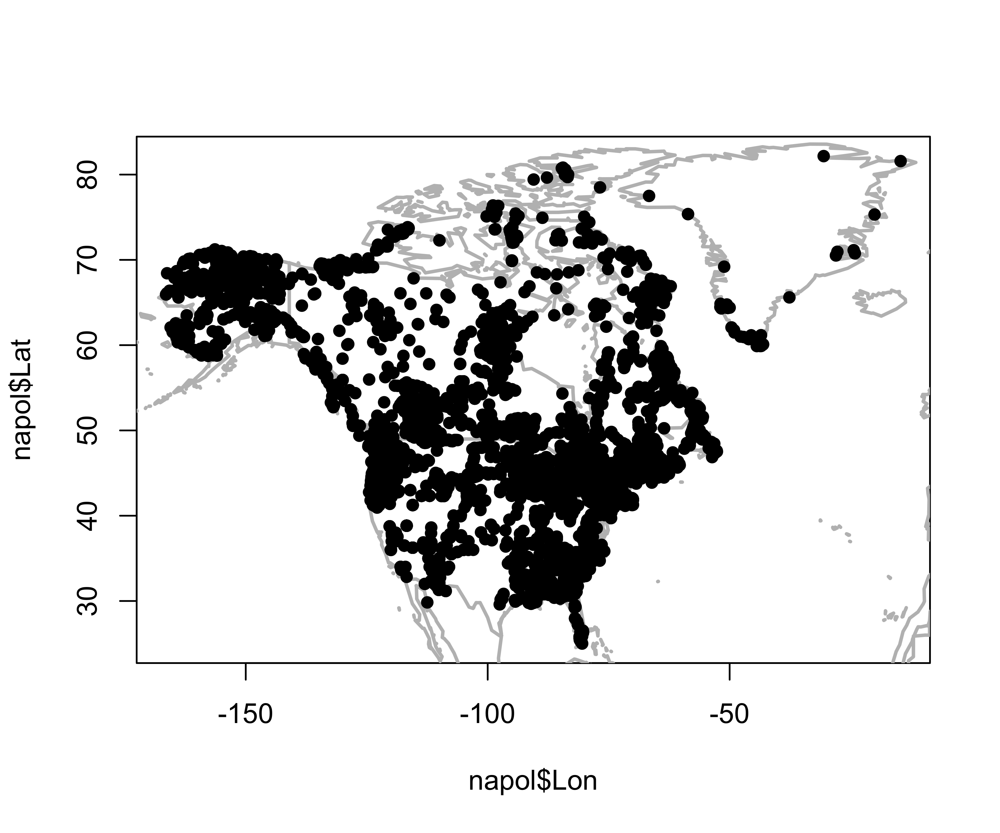
3.2 Plots
Load the tabplot package. Note that tabplot loads some other packages (ffbase, ff, bit, etc.) that allow for efficient processing of large data sets and replace some of the functions in the base package. It might be good to restart R after using the tabplot package.
Here’s a simple tableplot, with the observations arranged by latitude (sortCol="Lat") and linear scales specified for all continuous variables (scales="lin", the tabplot() function attempts to find a suitable scale for each variable, but here the pollen variables were all transformed prior to the analysis, and so we want to suppress further transformation here).
(Note that it just happens that the resulting plot looks like a standard pollen diagram–this isn’t designed in any way.)
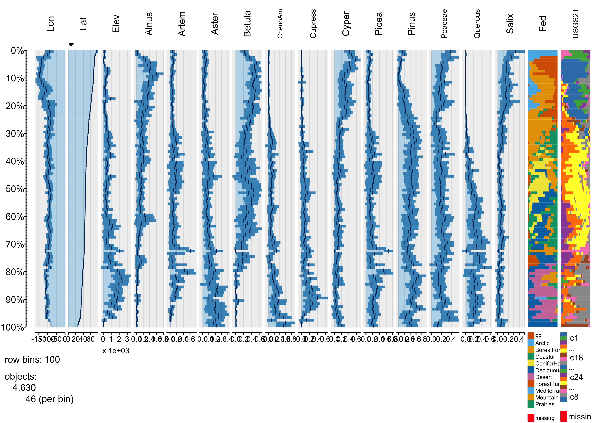
It’s possible to see broad trends in all of the pollen types, as well as in the frequency of different vegetationtypes as a function of latitude.
Each bin the above plot represents a bin that, in this case, holds 46 observations, and what is plotted as bars in each column is the bin-average or frequency for those observations. Here’s a second plot like the first, using more bins:
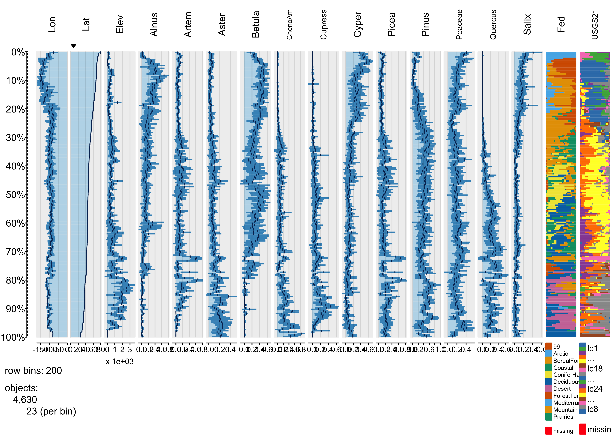
The same broad-scale patterns are evident in this plot, suggesting that the approach is robust with respect to the number of bins. The next plot using the abundance of Picea (spruce to organize the data):
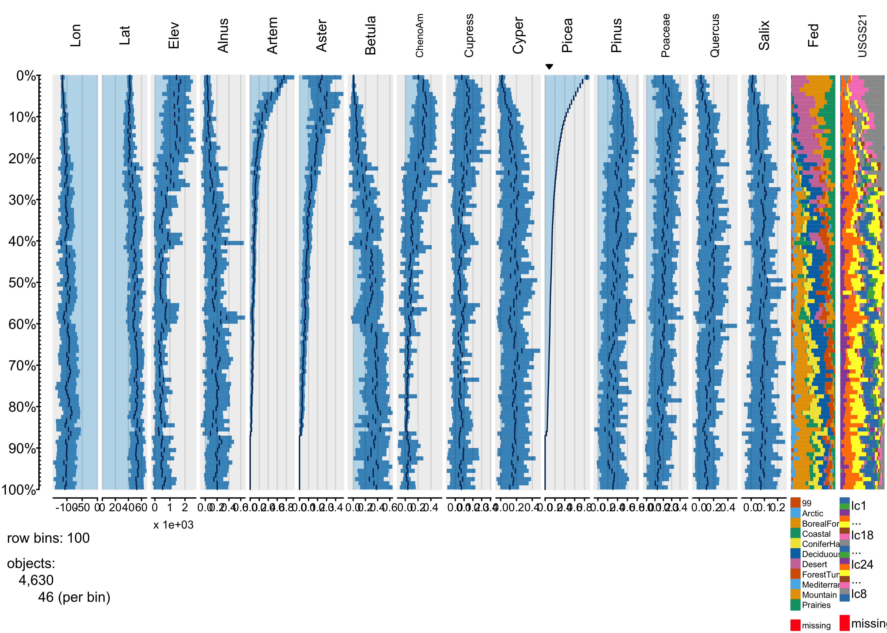
The plot shows that Aremisia (sagebrush) pollen has a similar profile to Picea and both tend to be high at high elevation and low (western) longitudes. The next plot using one of the categorical variables to organize the data.
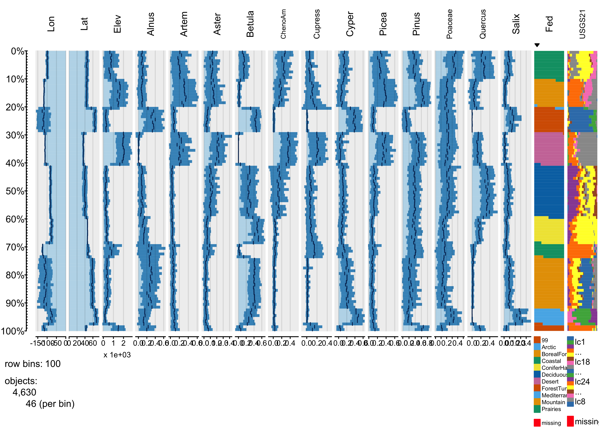
The blockiness of the different profiles shows that the individual vegetation types have distinctive mixtures of the different pollen types.
3.3 Global fire data
The global fire data set has roughly the same number of variables as the pollen data, but ten times the number of observations. The number of individual observations in each bin is therefore larger, increasing the likelihood that the contents of individual bins will be more heterogeneous, with an consequent loss of overall information.
3.4 Plots
To start, produce a tableplot, arranged by mean-annual temperature (mat), an obvious first-order preditor of biomass burning, as well as overall climate (through the dependence of the water balance on temperature via the Clausius-Clapyron relationship):

Overall, the trends of individual variables are relatively smooth, and it’s easy to see distiguish the temperature and moisture variables (as well as the population variable gpw). The vegetation-type variables megabiome and vegtype are also well sorted out along a mean annual temperature gradient. Burned fraction (gfed) obviously displays a threshold-type relationshion, where values are small at low temperatures, and higher at high values of mat.
Next, the tableplot is sorted by precipitation minus evapotranspiration (pme, or P-E):

The relationship between burned fraction and P-E evident in univariate plots–the arch-shaped pattern, where burned fraction is highest at intermediate values of effective moisture–is also evident here: as P-E monotonically incrases, burned fraction (gfed) rises, then falls.
Finally, the tableplot can be sorted by burned fraction (gfed):
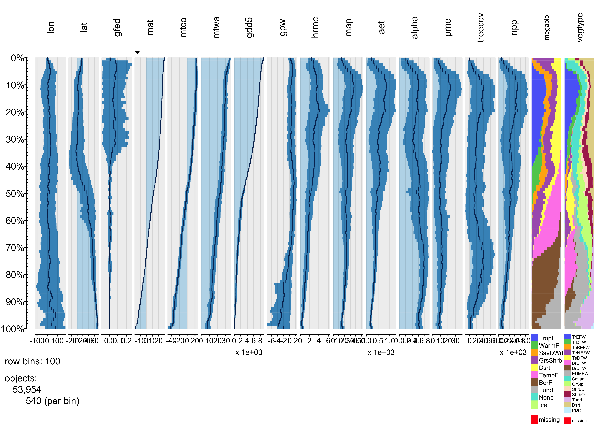
This plot confirms the existing relationships, where burned fraction broadly tracks temperature and P-E. However the plots also reveal a distinct threshold that is apparently related to a distinct discontinuity in vegetation: the transition beteen desert and tundra vegetation types, and grassland, shubland and forested ones.
4 Plotting multivariate/multiple time series
Although the tableplots of the North American pollen data above happened to look like conventional pollen diagrams, which were a comparatively early (over a century ago) attempt to visualize multivariate data, the data displayed by the tableplot() function does not necessarily need to be a series. The next example illustrates a display method in which the data do form a series, in this case pollen data again, only this time for a single site, which form a multivariate time series.
4.1 Carp L. pollen data
The data here come from a long pollen record from Carp L., in Washinton State. (Whitlock, C.L. et al., 2000, Palaeogeography Palaeoclimatology Palaeoecology 155(1-2):7-29 [https://doi.org/10.1016/S0031-0182(99)00092-9] (https://doi.org/10.1016/S0031-0182\(99\)00092-9) and Whitlock, C. and P.J. Bartlein, 1997, Nature 388:57-61 https://doi.org/10.1038/40380. Pollen data are “long-tailed” and so the data were transformed earlier by taking the square root of the pollen percentages.
# read Carp L. pollen data (transformed to square-roots)
csvpath <- "/Users/bartlein/Projects/ESSD/data/csv_files/"
csvname <- "carp96t.csv" # square-root transformed data
carp <- read.csv(paste(csvpath, csvname, sep=""))
summary(carp)## Depth Age IS Dippine Happine undpine
## Min. : 1.30 Min. : 0.3983 3 :47 Min. :0.000 Min. :0.0000 Min. :1.629
## 1st Qu.: 7.15 1st Qu.: 25.1045 1 :31 1st Qu.:1.220 1st Qu.:0.5585 1st Qu.:4.351
## Median :12.80 Median : 57.6462 2 :24 Median :2.033 Median :1.1830 Median :5.827
## Mean :12.48 Mean : 58.5209 4 :23 Mean :2.048 Mean :1.1933 Mean :5.653
## 3rd Qu.:17.65 3rd Qu.: 89.0536 5a :18 3rd Qu.:2.813 3rd Qu.:1.7915 3rd Qu.:7.021
## Max. :23.15 Max. :124.9092 5c :15 Max. :5.247 Max. :3.3850 Max. :9.145
## (Other):41
## Picea Abies Pseudotsug Juniperus Thet Tmert
## Min. :0.000 Min. :0.0000 Min. :0.0000 Min. :0.0000 Min. :0.0000 Min. :0.0000
## 1st Qu.:0.681 1st Qu.:0.5655 1st Qu.:0.0000 1st Qu.:0.2950 1st Qu.:0.0000 1st Qu.:0.0000
## Median :1.141 Median :0.8230 Median :0.5010 Median :0.5790 Median :0.4650 Median :0.0000
## Mean :1.252 Mean :0.8382 Mean :0.5850 Mean :0.7792 Mean :0.5844 Mean :0.2315
## 3rd Qu.:1.802 3rd Qu.:1.0780 3rd Qu.:0.8375 3rd Qu.:1.0180 3rd Qu.:0.9345 3rd Qu.:0.4485
## Max. :3.741 Max. :2.1440 Max. :2.7850 Max. :3.7170 Max. :2.6690 Max. :1.0670
##
## Taxusbrev Alnus Arubra Corylus Betula Salix
## Min. :0.00000 Min. :0.00000 Min. :0.0000 Min. :0.0000 Min. :0.0000 Min. :0.0000
## 1st Qu.:0.00000 1st Qu.:0.00000 1st Qu.:0.0000 1st Qu.:0.0000 1st Qu.:0.0000 1st Qu.:0.0000
## Median :0.00000 Median :0.00000 Median :0.4980 Median :0.0000 Median :0.0000 Median :0.3470
## Mean :0.02918 Mean :0.06538 Mean :0.5741 Mean :0.2122 Mean :0.2167 Mean :0.2940
## 3rd Qu.:0.00000 3rd Qu.:0.00000 3rd Qu.:0.8970 3rd Qu.:0.4130 3rd Qu.:0.4745 3rd Qu.:0.5355
## Max. :0.84100 Max. :1.02100 Max. :3.1130 Max. :1.7150 Max. :1.0210 Max. :1.1700
##
## Fraxinus Quercus Poaceae Artemisia Ambrosia Ivaciliat
## Min. :0.0000 Min. :0.0000 Min. :0.553 Min. :0.000 Min. :0.00000 Min. :0.000000
## 1st Qu.:0.0000 1st Qu.:0.0000 1st Qu.:1.862 1st Qu.:3.205 1st Qu.:0.00000 1st Qu.:0.000000
## Median :0.0000 Median :0.3550 Median :2.824 Median :4.605 Median :0.00000 Median :0.000000
## Mean :0.0344 Mean :0.6227 Mean :2.954 Mean :4.377 Mean :0.07275 Mean :0.002111
## 3rd Qu.:0.0000 3rd Qu.:0.8030 3rd Qu.:4.071 3rd Qu.:5.891 3rd Qu.:0.00000 3rd Qu.:0.000000
## Max. :0.7670 Max. :3.5530 Max. :5.951 Max. :8.121 Max. :0.81700 Max. :0.420000
##
## Chenopodii
## Min. :0.0000
## 1st Qu.:0.3665
## Median :0.5350
## Mean :0.6872
## 3rd Qu.:0.8965
## Max. :3.9650
## Pollen data (expressed as proportions or percentages of individual pollen types) vary over an order of magnitude in value, and also have long-tailed distributions. Consequently they should be tranformed, and a useful transformation is to simply take the square root of the proportions.
## [1] "Depth" "Age" "IS" "Dippine" "Happine" "undpine" "Picea"
## [8] "Abies" "Pseudotsug" "Juniperus" "Thet" "Tmert" "Taxusbrev" "Alnus"
## [15] "Arubra" "Corylus" "Betula" "Salix" "Fraxinus" "Quercus" "Poaceae"
## [22] "Artemisia" "Ambrosia" "Ivaciliat" "Chenopodii"As it appears in the spreadsheet, the data are not particularly well organized, but instead the columns are arranged according to the traditional style of pollen diagrams. An alternative approach is to arrange the indiviual variables (pollen types) according to their affinities as they vary over the core, which can be accomplished by doing a cluster analysis on a dissimilary matrix among pollen types: taxa that vary in a similar (or inverse) fashion downcore appear adjacent to one another.
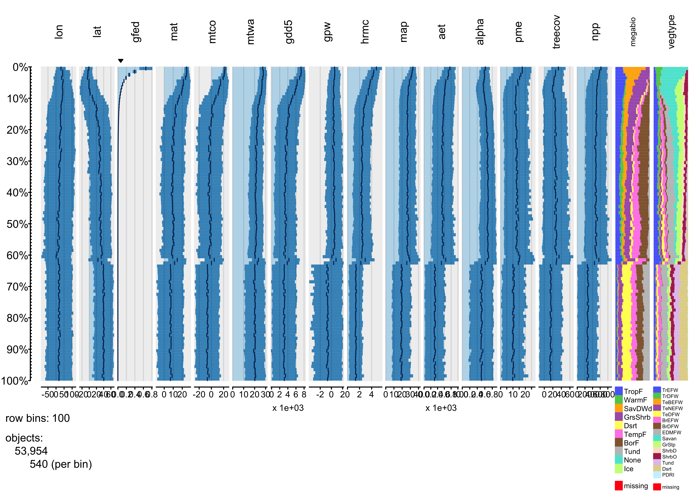
## $names
## [1] "rowInd" "colInd" "Rowv" "Colv"## [1] 3 18 19 4 2 1 13 20 21 10 16 11 15 14 9 6 12 17 8 5 22 7The “heatmap” (which in itself provides an interesting way to look at the data), can be used to rearrange the columns of the dataframe to put similar (or inversely similar, when one type is high the other is low) next to one another:
## [1] "Depth" "Age" "IS" "Dippine" "Happine" "undpine" "Picea"
## [8] "Abies" "Pseudotsug" "Juniperus" "Thet" "Tmert" "Taxusbrev" "Alnus"
## [15] "Arubra" "Corylus" "Betula" "Salix" "Fraxinus" "Quercus" "Poaceae"
## [22] "Artemisia" "Ambrosia" "Ivaciliat" "Chenopodii"stcarp[4:25] <- tcarp[sort_cols]
names(stcarp) <- c("Depth", "Age", "IS", names(tcarp)[sort_cols])
names(stcarp)## [1] "Depth" "Age" "IS" "undpine" "Poaceae" "Artemisia" "Picea"
## [8] "Happine" "Dippine" "Corylus" "Ambrosia" "Ivaciliat" "Taxusbrev" "Fraxinus"
## [15] "Alnus" "Salix" "Betula" "Tmert" "Pseudotsug" "Arubra" "Quercus"
## [22] "Thet" "Abies" "Chenopodii" "Juniperus"4.2 Plots
The idea behind the mvtsplots() package (and function) is to use color to reveal underlying patterns in the data. The first plot shows the “raw” data, simply coded for each pollen taxon independently from low (magenta) to high (green). The plots on the margins are of boxplots for the individual series (right), and a time series of the median values across all series (bottom), which attempt to summarize the overall level of the series.
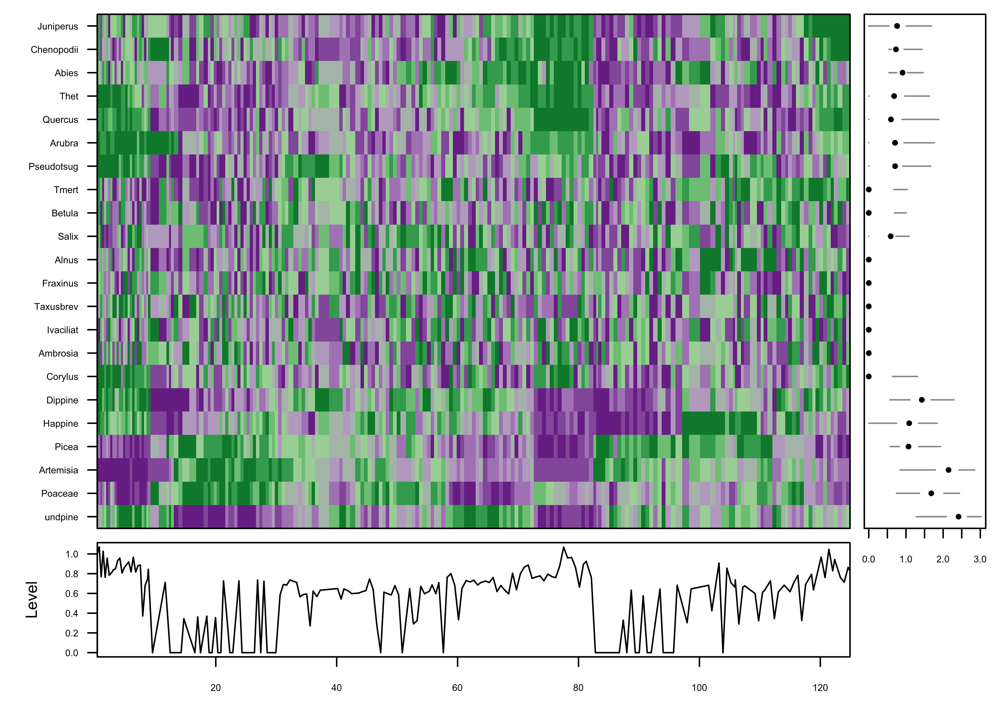
PLotted this way, one begins to get an idea of some organization to the data along the time axis. The plot is a little noisy, and can be simplified by smoothing the individual series.
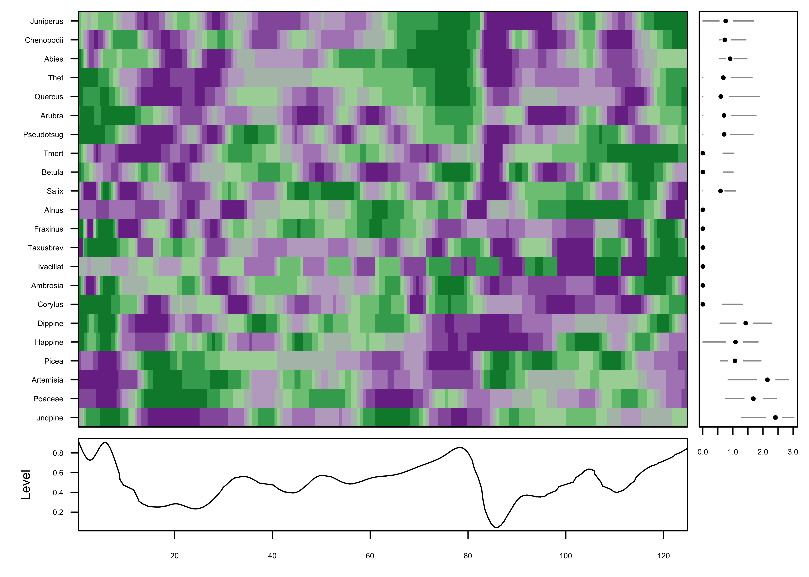
Further simplification can be gotten by “normalizing” the data, transforming and assigning colors based on the range of values in each series individually.
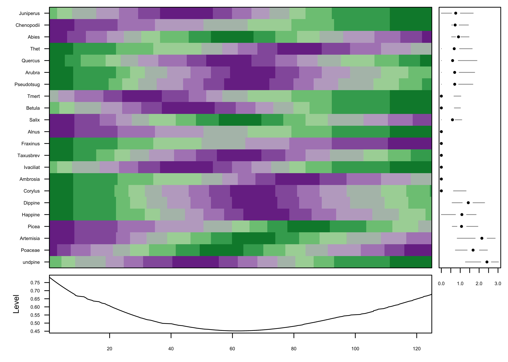
The color field now shows that the data are well organized in time, which can be verified by adding a plot of the variable IS i.e. the MIS (Marine Isotopic Stage) to the plot (on the last row). The progression of plots can also be seen to have proceeded from a fairly chaotic pattern to one with coherent patches:
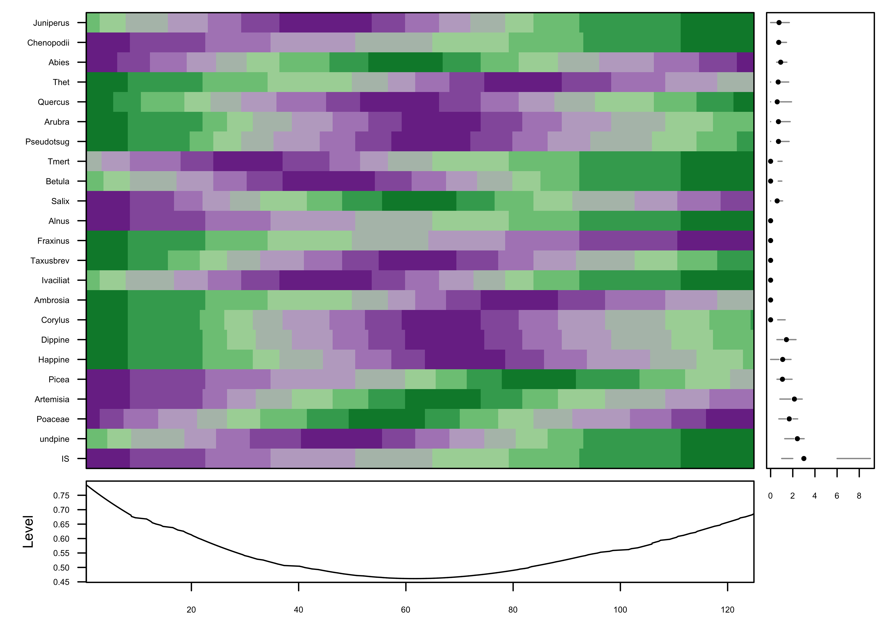
5 Interactive plots
R has a long history of attempts to develop interactive plots, usually consisting of the basic plots developed from low-dimensional data. RStudio’s Shiny package https://shiny.rstudio.com and the Plotly R Open Source Graphics Library https://plot.ly/r/ are examples that are rapidly developing. An interesting plot for displaying high-dimensional data is the cubeplot, which is easiest to explain by looking at one. The data here come from the TraCE-21k transient climate simulation from 21,000 years ago to present (at monthly resolution) (Liu, Z., et al. 2009, Science 325(5938): 310-314). A data set of of decadal-average “anomaly” values (the difference between past and present) is examined here.
The data are read and plotted using the raster and rasterVis framework. First, load the packages:
Read the data:
Even though the data is decadal resolution, it’s still a lot of data, and so for this example, the data are (actually) decimated to produce century time-step decadal average values.
A levelplot of one slice of the the data can be used to become oriented to the geographic layout of the data:
mapTheme <- rasterTheme(region=(rev(brewer.pal(10,"RdBu"))))
cutpts <- c(-40,-10,-5,-2,-1,0,1,2,5,10,20)
col <- rev(brewer.pal(10,"RdBu"))
plt <- levelplot(subset(tas2,1), at=cutpts, margin=FALSE, par.settings=mapTheme)
plt + latticeExtra::layer(sp.lines(world_outline, col="black", lwd=1))
Then, the cubeplot can be produced using the cubeview() function from the cubeview package. The plot is interactively controlled as follows (from the cubeview() help file:
The location of the slices can be controlled by keys:
- x-axis: LEFT / RIGHT arrow key
- y-axis: DOWN / UP arrow key
- z-axis: PAGE_DOWN / PAGE_UP key
Other controls:
- Press and hold left mouse-button to rotate the cube
- Press and hold right mouse-button to move the cube
- Spin mouse-wheel or press and hold middle mouse-button and move mouse down/up to zoom the cube
- Press space bar to show/hide slice position guides
The cubeplot, as rendered here, displays a map on the “front (or rear) face” of the brick, and Hovmöller plots on the top (or bottom) and sides.

Here is a link to the plot on the server: https://pjbartlein.github.io/REarthSysSci/tr21cube.html